CC3: Procesos Termodinámicos
Análisis detallado de los cuatro procesos básicos — isotérmico, adiabático, isobárico, isocórico — para un gas ideal: trabajo, calor y cambio de energía interna en cada caso, con representación en el diagrama $p$-$V$.
Temas que cubre
- Proceso isotérmico ($T =$ cte): $\Delta U = 0$ para gas ideal, $W = -Q = Nk_BT\ln(V_f/V_i)$
- Proceso isocórico ($V =$ cte): $W = 0$, $Q = \Delta U = NC_V\Delta T$
- Proceso isobárico ($p =$ cte): $Q = \Delta H = NC_p\Delta T$, $W = -p\Delta V$
- Proceso adiabático ($Q = 0$): $pV^\gamma =$ cte, $\Delta U = W = NC_V\Delta T$
- Representación en el diagrama $p$-$V$: el trabajo es el área bajo la curva
- Comparación de los cuatro procesos para el mismo cambio de volumen
Conceptos clave
Diagrama $p$-$V$
Representación gráfica de los procesos cuasi-estáticos. El trabajo neto $W = -\oint p\,dV$ es el área encerrada por el ciclo (positivo si se recorre en sentido horario). Las isotermas son hipérbolas ($p \propto 1/V$); las adiabáticas son más empinadas ($p \propto V^{-\gamma}$).
Gas ideal: $\Delta U$ solo depende de $\Delta T$
Para gas ideal, $U = NC_VT$ (solo función de $T$). En cualquier proceso que devuelva el sistema a la misma temperatura, $\Delta U = 0$. Por eso en el isotérmico $Q = -W$: todo el calor absorbido se convierte en trabajo.
Adiabática vs. isotérmica
La adiabática es más empinada que la isotérmica en el diagrama $p$-$V$ porque al comprimir adiabáticamente la temperatura sube, aumentando $p$ más que a $T$ constante. El factor es $\gamma = C_p/C_V > 1$: la adiabática cae como $V^{-\gamma}$, la isotérmica como $V^{-1}$.
Entalpía en el proceso isobárico
A $p$ constante, $Q_p = \Delta H = \Delta U + p\Delta V$: el calor va a cambiar la energía interna Y a realizar trabajo de expansión. Por eso $C_p > C_V$: se necesita más calor para subir $T$ a $p$ constante que a $V$ constante.
Fórmulas fundamentales

Qué hay que entender
- El trabajo es el área bajo la curva en el diagrama $p$-$V$: para el mismo cambio de volumen, el proceso isotérmico realiza más trabajo que el adiabático (isotérmica más alta que adiabática en la expansión).
- Para gas ideal: $\Delta U = 0$ ↔ $\Delta T = 0$ ↔ proceso isotérmico. Esto no vale en general — un gas real puede tener $\Delta U \neq 0$ a $T$ constante (efecto Joule-Thomson).
- El proceso isobárico es el más común en la práctica de laboratorio (presión atmosférica constante). La entalpía $H$ es la función natural para este proceso: $Q_p = \Delta H$.
- Una expansión libre (en el vacío, $p_{ext} = 0$) tiene $W = 0$ y si es adiabática también $Q = 0$, por lo que $\Delta U = 0$ — pero el proceso es irreversible y genera entropía. No es un proceso cuasi-estático.